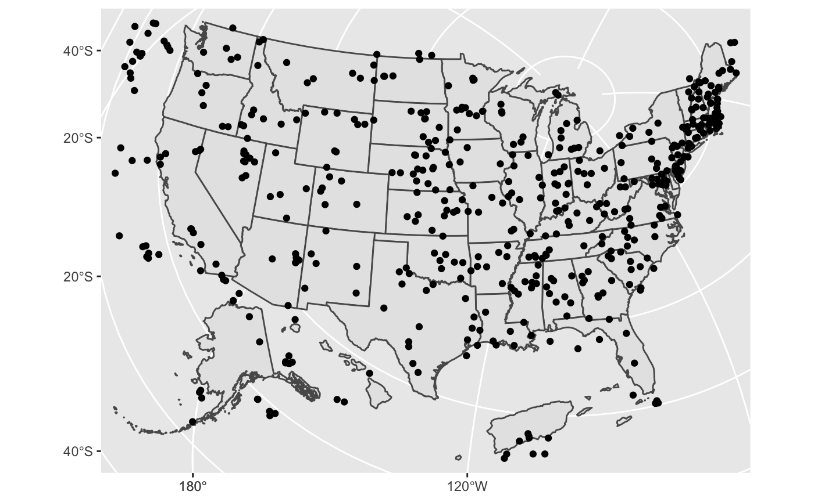

The goal of ggcart is to include Puerto Rico, the Virgin Islands and Guam in the traditional Albers maps. Also, ggcart will make it easier to map line, point and other data in the Albers projection.
Installation
You can install the development version from GitHub with:
# install.packages("devtools")
devtools::install_github("uncoast-unconf/ggcart")Examples
Sample datasets include information from the National Inventory of Dams and the National Bridge Inventory.
library(ggcart)
## Pull in sample data for mapping
head(bridges) ## Data slice from National Bridge Inventory
#> st_abbv rectype rtnum strcture latitude longitude year
#> 1 AK 1 10808 NO DATA ENTERED 0.00000 0.0000 2008
#> 2 AK 1 00391 CHINIAK HIGHWAY 57.60400 -152.4055 1974
#> 3 AK 1 80007 8000700 55.79634 -131.6278 1999
#> 4 AK 1 00966 MENDENHALL LOOP RD 58.40417 -134.5847 1985
#> 5 AK 1 06590 NO DATA ENTERED 56.34885 -132.7188 2004
#> 6 AK 1 NSPCY DIMOND DRIVE 61.17722 -149.8447 1978
#> bridgecond geometry
#> 1 F NaN, NaN
#> 2 F -3422682, 4855940
#> 3 G -2309931, 4058852
#> 4 F -2384415, 4382488
#> 5 G -2355319, 4139464
#> 6 G -3090509, 5070914The standard Albers conic projection isn’t great for points in Alaska, Hawaii, Puerto Rico, Guam and the U.S. Virgin Islands. (AK and HI are taken care of with AlbersUSA. )


To convert your own set of point data with a latitude and longitude to an sf object, try the following:
# To convert your own point data for use with ggcart
bridges <- read_sf("data-raw/bridges.csv", ## Replace with your own csv file
options = c("X_POSSIBLE_NAMES=longitude",
"Y_POSSIBLE_NAMES=latitude"))Demonstration on how the shift/rotate/scale functionality within the transport_sf() function works. For this example we will be shifting Puerto Rico by 1300km west and 900km north, then rotate 90 degrees, then scale to 2 times the size.
### Demonstration of how the shift functionality works -----------
pr_centroid <- sf::st_centroid(sf::st_geometry(ggcart:::puerto_rico))
# define shift dimension points for visual reference on map
pt1 <- pr_centroid
pt2 <- pr_centroid + 1000*c(-1300,0)
pt3 <- pr_centroid + 1000*c(-1300,900)
# Create into two lines (pt1-->pt2, pt2-->pt3) in sf object
pts <- sf::st_multilinestring(list(rbind(pt1[[1]][1:2], pt2[[1]][1:2]),
rbind(pt2[[1]][1:2], pt3[[1]][1:2])))
pts <- sf::st_sfc(pts)
pts <- sf::st_set_crs(pts, sf::st_crs(pr_centroid))
# plot the shift/rotate/scale to Puerto Rico
ggplot()+
geom_sf(data=ggcart:::lower48)+
geom_sf(data=ggcart:::puerto_rico, color="red")+
geom_sf(data=ggcart:::transport_sf(sf=ggcart:::puerto_rico,
scale=2,
shift = c(-1300,900)*1000,
rotate=pi/2), color="blue")+
geom_sf(data=pts, color="purple")+
annotate(geom="text",
x=c(mean(c(pt1[[1]][1], pt2[[1]][1])),
mean(c(pt2[[1]][1], pt3[[1]][1]))),
y=c(mean(c(pt1[[1]][2], pt2[[1]][2])),
mean(c(pt2[[1]][2], pt3[[1]][2]))),
label=c("1300km West","900km North"),
angle=c(0,90),
color="purple",
vjust=-.2)
Almost there!
geom_sf_albersusa() exists - but has some trouble…
(And is not documented, and it outputs some warning messages, and it ignores some territories…)
library(tigris)
#> Warning: package 'tigris' was built under R version 3.4.4
#> To enable
#> caching of data, set `options(tigris_use_cache = TRUE)` in your R script or .Rprofile.
#>
#> Attaching package: 'tigris'
#> The following object is masked from 'package:graphics':
#>
#> plot
library(rmapshaper)
#> Warning: package 'rmapshaper' was built under R version 3.4.4
library(sf)
#> Warning: package 'sf' was built under R version 3.4.4
#> Linking to GEOS 3.6.1, GDAL 2.1.3, PROJ 4.9.3
library(dplyr)
#> Warning: package 'dplyr' was built under R version 3.4.4
#>
#> Attaching package: 'dplyr'
#> The following objects are masked from 'package:stats':
#>
#> filter, lag
#> The following objects are masked from 'package:base':
#>
#> intersect, setdiff, setequal, union
library(ggplot2)
library(ggcart)
capture.output({map <- states(cb = TRUE) %>%
st_as_sf(map) %>%
ms_simplify(keep = .05) %>%
st_transform(
"+proj=laea +lat_0=45 +lon_0=-100 +x_0=0 +y_0=0 +a=6370997 +b=6370997 +units=m +no_defs"
)
})
#> Warning in strptime(x, fmt, tz = "GMT"): unknown timezone 'zone/tz/2018i.
#> 1.0/zoneinfo/America/Chicago'
#> [1] "\r | \r | | 0%\r | \r |= | 1%\r | \r |= | 2%\r | \r |== | 3%\r | \r |=== | 4%\r | \r |=== | 5%\r | \r |==== | 6%\r | \r |==== | 7%\r | \r |===== | 7%\r | \r |===== | 8%\r | \r |====== | 9%\r | \r |====== | 10%\r | \r |======= | 10%\r | \r |======= | 11%\r | \r |======== | 12%\r | \r |======== | 13%\r | \r |========= | 13%\r | \r |========= | 14%\r | \r |========= | 15%\r | \r |========== | 15%\r | \r |========== | 16%\r | \r |=========== | 16%\r | \r |=========== | 17%\r | \r |============ | 18%\r | \r |============ | 19%\r | \r |============= | 19%\r | \r |============= | 20%\r | \r |============= | 21%\r | \r |============== | 21%\r | \r |============== | 22%\r | \r |=============== | 22%\r | \r |=============== | 23%\r | \r |=============== | 24%\r | \r |================ | 24%\r | \r |================ | 25%\r | \r |================= | 25%\r | \r |================= | 26%\r | \r |================= | 27%\r | \r |================== | 27%\r | \r |================== | 28%\r | \r |=================== | 29%\r | \r |=================== | 30%\r | \r |==================== | 30%\r | \r |==================== | 31%\r | \r |==================== | 32%\r | \r |===================== | 32%\r | \r |===================== | 33%\r | \r |====================== | 33%\r | \r |====================== | 34%\r | \r |======================= | 35%\r | \r |======================= | 36%\r | \r |======================== | 36%\r | \r |======================== | 37%\r | \r |======================== | 38%\r | \r |========================= | 38%\r | \r |========================= | 39%\r | \r |========================== | 39%\r | \r |========================== | 40%\r | \r |========================== | 41%\r | \r |=========================== | 41%\r | \r |=========================== | 42%\r | \r |============================ | 43%\r | \r |============================ | 44%\r | \r |============================= | 44%\r | \r |============================= | 45%\r | \r |============================== | 46%\r | \r |============================== | 47%\r | \r |=============================== | 47%\r | \r |=============================== | 48%\r | \r |================================ | 49%\r | \r |================================ | 50%\r | \r |================================= | 50%\r | \r |================================= | 51%\r | \r |================================== | 52%\r | \r |================================== | 53%\r | \r |=================================== | 53%\r | \r |=================================== | 54%\r | \r |==================================== | 55%\r | \r |==================================== | 56%\r | \r |===================================== | 57%\r | \r |====================================== | 58%\r | \r |====================================== | 59%\r | \r |======================================= | 59%\r | \r |======================================= | 60%\r | \r |======================================== | 61%\r | \r |======================================== | 62%\r | \r |========================================= | 63%\r | \r |========================================= | 64%\r | \r |========================================== | 64%\r | \r |========================================== | 65%\r | \r |=========================================== | 66%\r | \r |=========================================== | 67%\r | \r |============================================ | 67%\r | \r |============================================ | 68%\r | \r |============================================= | 69%\r | \r |============================================= | 70%\r | \r |============================================== | 70%\r | \r |============================================== | 71%\r | \r |=============================================== | 72%\r | \r |=============================================== | 73%\r | \r |================================================ | 73%\r | \r |================================================ | 74%\r | \r |================================================= | 75%\r | \r |================================================= | 76%\r | \r |================================================== | 76%\r | \r |================================================== | 77%\r | \r |================================================== | 78%\r | \r |=================================================== | 78%\r | \r |=================================================== | 79%\r | \r |==================================================== | 79%\r | \r |==================================================== | 80%\r | \r |==================================================== | 81%\r | \r |===================================================== | 81%\r | \r |===================================================== | 82%\r | \r |====================================================== | 82%\r | \r |====================================================== | 83%\r | \r |====================================================== | 84%\r | \r |======================================================= | 84%\r | \r |======================================================= | 85%\r | \r |======================================================== | 85%\r | \r |======================================================== | 86%\r | \r |======================================================== | 87%\r | \r |========================================================= | 87%\r | \r |========================================================= | 88%\r | \r |========================================================== | 88%\r | \r |========================================================== | 89%\r | \r |========================================================== | 90%\r | \r |=========================================================== | 90%\r | \r |=========================================================== | 91%\r | \r |============================================================ | 92%\r | \r |============================================================ | 93%\r | \r |============================================================= | 93%\r | \r |============================================================= | 94%\r | \r |============================================================= | 95%\r | \r |============================================================== | 95%\r | \r |============================================================== | 96%\r | \r |=============================================================== | 96%\r | \r |=============================================================== | 97%\r | \r |================================================================ | 98%\r | \r |================================================================ | 99%\r | \r |=================================================================| 100%"
ggplot() +
ggcart:::geom_sf_albersusa(data = map, aes(geometry = st_geometry(map))) +
ggcart:::geom_sf_albersusa(data = bridges, aes(geometry = st_geometry(bridges)))
#> Warning: attribute variables are assumed to be spatially constant
#> throughout all geometries
#> Warning: attribute variables are assumed to be spatially constant
#> throughout all geometries